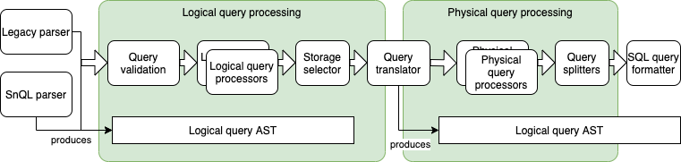
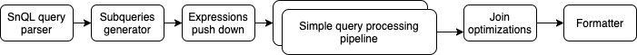

Snuba Query Processing¶
Snuba has a query processing pipeline that starts with the parsing of the Snuba query language (legacy and SnQL) into an AST ands with a SQL query being executed on Clickhouse. Between these two phases, several passes on the AST to apply query processing transformations are executed.
The processing pipeline has two main goals: optimize the query and prevent queries that would be dangerous for our infrastructure.
As for the data model, the query processing pipeline is divided into a logical section where the product related processing is performed and a physical section which is focused on optimizing the query.
The logical sections contains steps like the validation of the query to ensure it matches the data model or applying custom functions. The physical section includes steps like promoting tags and selecting a pre-aggregated view to serve the query.
Query Processing Phases¶
This section gives an introduction and some pointers to code and examples for the phases discussed above.
Legacy and SnQL Parsers¶
Snuba supports two languages, the legacy JSON based one and the new one named SnQL. With the exceptions of joins and composite queries which are not supported by the legacy language, the query processing pipeline does not change whether one or the other language is used.
They both produce a logical query AST which is represented by this data structure.
The legacy parser is here, while the SnQL parser is in this module.
Query Validation¶
This phase ensures the query can be run (most of the times, we do not yet catch all possible invalid queries). The responsibility of this phase is to return an HTTP400 in case of an invalid query with a proper useful message to the user.
This is divided in two sub-phases: general validation and entity specific validation.
General validation is composed by a set of checks that are applied to each query right after the Query is produced by the parser. This happens in this function. This includes validations like preventing alias shadowing and function signature validation.
Each entity can provide some validation logic as well in the form of required columns. This happens in this class. This allows the query processing to reject queries that do not have a condition on project_id or that do not have a time range.
Logical Query Processors¶
Query processors are stateless transformations that receive a Query object (with its AST) and transform it in place. This is the interface to implement for logical processors. In the logical phase each entity provides the query processors to be applied in sequence. Common use cases are custom functions like apdex, or time bucketing like the time series processor.
Query processors are not supposed to depend on other processors to be executed before or after and should be independent from each other.
Storage Selector¶
As explained in Snuba Data Model, each Entity can define multiple Storages. Multiple storages represent multiple tables and materialized views can be defined for performance reasons as some can respond to some queries faster.
At the end of the logical processing phase (which is entirely based on the entity) the storage selector can inspect the query and pick the appropriate storage for the query. Storage selectors are defined in the entity data model and implement this interface. An example is the Errors entity, which has two storages, one is for consistent queries (they are routed to the same nodes where events are written) and the other only includes replicas we do not write onto to serve most queries. This reduces the load on the nodes we write onto.
Query Translator¶
Different storages have different schemas (these reflect the schema of a
clickhouse table or view). All of them are generally different from the entity
model, the most notable example being the subscriptable expression used for
tags tags[abc] that does not exist in clickhouse where accessing a tags
looks like tags.values[indexOf(tags.key, 'abc')] .
After a storage has been selected, the query needs to be translated to the physical query. Translator is a rule based systems, rules are defined by the entity (for each storage) and are applied in sequence.
Contrarily to query processors, translation rules do not have full context on the query and can only translate an individual expression. This allows us to compose translation rules easily and reuse them across entities.
These are the translation rules for the transactions entity.
Physical Query Processors¶
Physical query processors work in a very similar way compared to the Logical query processors. Their interface is very similar and the semantics is the same. The difference is that they operate on the physical query and, as such, they are mainly designed for optimizations. For example this processor finds equality conditions on tags and replace them with the equivalent condition on a tags hashmap (where we have a bloom filter index) making the filtering operation faster.
Query Formatter¶
This component simply formats the query into the Clickhouse query string.
Composite Query Processing¶
The discussion above is valid only for simple queries, composite ones (joins and queries that include subqueries follow a slightly different path).
The simple query pipeline discussed above would not work on join queries or on queries that contain subqueries. In order to make that work, each step would have to take into account joined queries and subqueries, which would multiply the complexity of the process.
To solve the issue we transform each join query into a join of multiple simple subqueries. Each subquery is a simple query that can be processed by the pipeline described above. This is also the preferred way to run Clickhouse joins as it allows us to apply filters before the join.
The Query Processing Pipeline for this type of queries is composed of a few additional steps with respect to what was described above.
Subquery Generator¶
This component takes a simple SnQL join query and create a subquery for each table in the join.
Expressions Push Down¶
The query generated at the previous step would be a valid join but incredibly inefficient. This step is basically a join optimizer that pushes down into subqueries all expressions that can be part of a subquery. This is a needed step independently from the subquery processing as the Clickhouse join engine does not do any expression push down and it would be up to Snuba to optimize the query.
Simple Query Processing Pipeline¶
This is the same pipeline discussed above from the logical query validation to the physical query processors.
Join Optimizations¶
At the end of the processing we can apply some optimizations to the overall composite query like turning a join into a Semi Join.